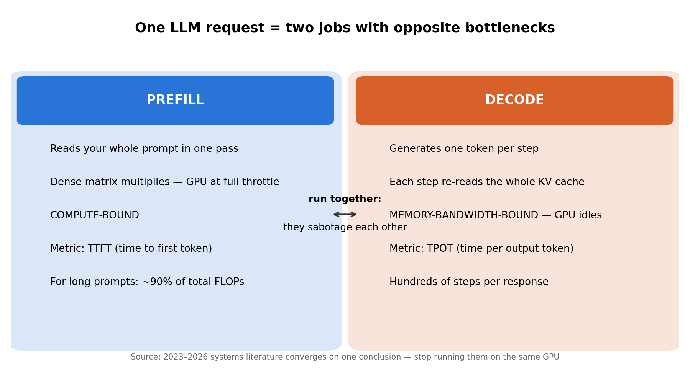
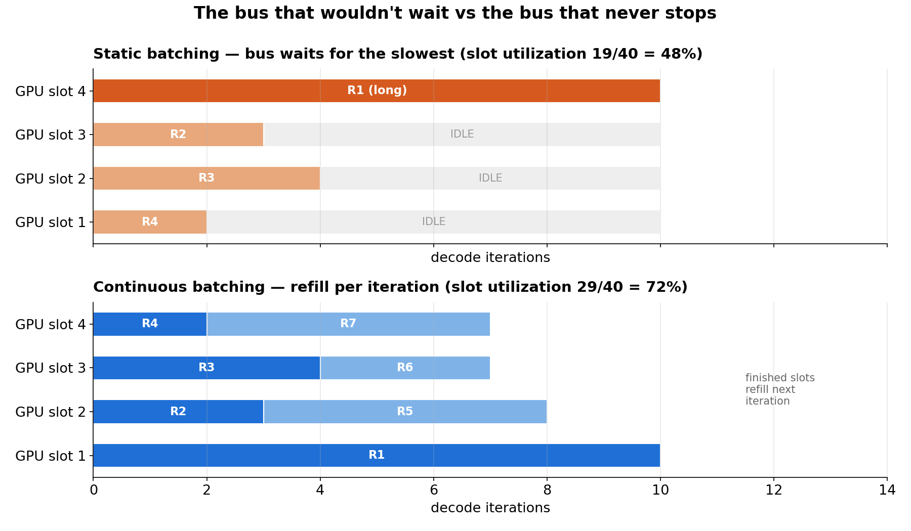
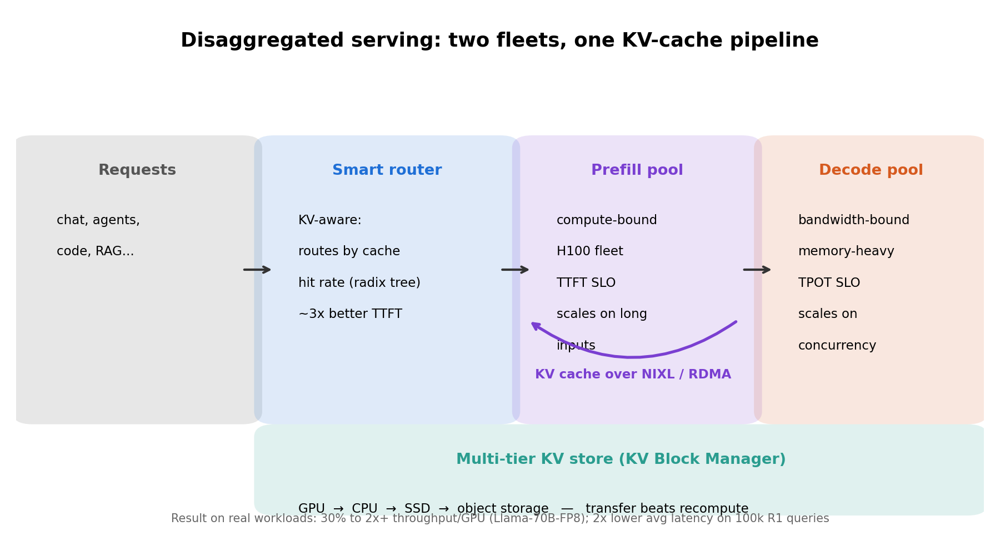
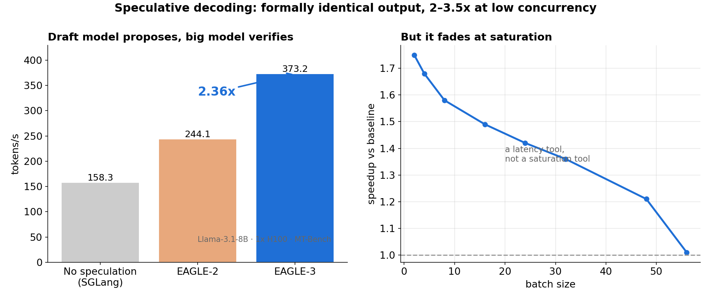

Every API call you make to an LLM is secretly two jobs glued together. The first reads your entire prompt in one giant matrix multiply — compute-bound, GPUs at full throttle. The second dribbles out tokens one at a time, each step re-reading the entire conversation history from memory — memory-bandwidth-bound, the GPU mostly idling. Run them on the same GPU and each one sabotages the other. The industry's 2026 answer, reached independently by half a dozen labs: stop running them on the same GPU. Split prefill from decode, and throughput per GPU roughly doubles.
ELI5: the kitchen and the delivery van
Think of a restaurant. The kitchen (prefill) cooks the whole order at once — blazing, batch-friendly, ovens full. The delivery van (decode) carries one box per trip — the speed limit is how fast you can load the van, not how fast you can drive. Now imagine one vehicle that has to be both. The delivery schedule wrecks the cooking, and the cooking wrecks the delivery.
That vehicle was every serving engine before ~2024. A short "hi" and a 10,000-token document were processed by the same GPU pool in the same batch, and one long request held the whole batch hostage — classic head-of-line blocking. The fix wasn't a bigger oven. It was two separate fleets.
How it works: the five moves that made serving cheap
Modern serving stacks are built from a small set of structural moves. Here they are, cheapest insight first:
- The KV cache. During decode, the model doesn't recompute attention over your prompt — it caches the key/value vectors and reads them back each step. Your 8k-token prompt becomes 8k vectors of state that must be read from GPU memory every single token. Decode is a memory problem, not a math problem. This one fact explains almost everything downstream.
- PagedAttention (vLLM). Before it, the KV cache was allocated as one contiguous chunk per request — like parking each car in its own private lot. Internal fragmentation wasted up to 80% of VRAM. PagedAttention borrows the OS trick of virtual memory: fixed-size blocks, non-contiguous, shared across requests. Waste drops from ~80% to under 4%. Same GPU, five times the concurrent requests.
- Continuous batching (Orca). Old servers waited for the slowest request in a batch to finish before starting anything new — like a bus that won't leave until every passenger reaches their destination. Continuous batching adds and removes requests per iteration: a finished request's slot is immediately refilled. No idling on the tail.
- Chunked prefill (Sarathi-Serve). A 32k-token prompt's prefill can starve decode for seconds. Chunk it: slice the prefill into pieces and piggy-back each piece onto a decode iteration. Latency spikes flatten out, the GPU stays compute-saturated during decode's memory-bound phases.
- Prefix caching (SGLang's RadixAttention). Agents resend the same 4,000-token system prompt hundreds of times a day. A radix tree stores computed prefixes and reuses them; time-to-first-token on a warm request collapses toward zero. Dynamo later lifted this same data structure to the cluster level for routing decisions.
State of the art: the disaggregation wave
The convergence point is disaggregated serving: physically separate GPU pools for prefill and decode, KV cache streamed between them. The research trail runs Splitwise → DistServe → Mooncake; the production packaging is NVIDIA Dynamo, an open-source orchestration layer that sits above your engine (vLLM, SGLang, TensorRT-LLM — it doesn't replace them, it coordinates them). Its machinery, per the v0.8.0 design docs:
- Disaggregated prefill/decode pools, sized and scaled independently. Different SLOs for each phase: TTFT (time to first token) vs TPOT (time per output token).
- A KV-aware smart router that routes requests to the worker with the highest cache hit rate, backed by a global radix-tree registry — prefix reuse, cluster-wide.
- A multi-tier KV block manager: GPU → CPU → SSD → object storage, because in many cases transferring a KV block is faster than recomputing it.
- NIXL, the transfer engine that moves KV cache between pools with reduced synchronization.
- A planner that autoscales on SLA signals — a surge in long-input traffic grows the prefill pool before latency breaches, not after.
The numbers that matter, all from the documented results on real workloads: ~3× better TTFT and ~2× average latency from KV-aware routing alone, measured on 100,000 real DeepSeek R1 queries on H100s. Disaggregation delivering 30% to 2×+ throughput per GPU on Llama-70B-FP8. And on production deployments: DeepSeek R1 on GB200 serving at 7× throughput per GPU, Kimi K2 at a 10× inference speedup. Two jobs, two fleets, and the math finally works.
The parallel breakthrough is speculative decoding — the only acceleration technique that comes with a formal guarantee of identical output. A tiny draft model proposes several tokens; the big model verifies them in one parallel forward pass. Rejection sampling keeps the final distribution mathematically identical to the target model alone. EAGLE-3, the current dominant architecture, pushed Llama-3.1-8B on a single H100 from 158.34 to 373.25 tokens/s (EAGLE-2: 244.10) — a 2.36× lift, measured on MT-Bench. NVIDIA's P-EAGLE (parallel drafting, March 2026) added another 55–69% at low concurrency over vanilla EAGLE-3 on GPT-OSS-20B, because it generates all draft tokens in one forward pass instead of autoregressively.
Two honest caveats the benchmarks spell out. First, the gains are batch-size dependent: in vLLM, EAGLE-3's 1.75× at batch size 2 fades to 1.01× by batch size 56 — at saturation, verification overhead eats the draft savings. Speculative decoding is a latency technique for low-concurrency workloads, not a throughput technique for saturated ones. Second, acceptance rate is the wrong scoreboard: on SPEED-Bench, a block drafter with 75% acceptance ran 1.8× faster than a sequential drafter at 88% — because every token in a block is computed in the same parallel pass, so a rejection costs almost nothing. And the gains are workload-shaped: coding and math prompts accept ~3 tokens per step; multilingual roleplay barely 1.7. If your traffic is code, speculate aggressively. If it's multilingual chat, measure on your own traffic first.
Takeaways
- An LLM request is two jobs with opposite bottlenecks. Prefill is compute-bound; decode is memory-bandwidth-bound. Everything in serving stacks follows from that split.
- The OS playbook won. Virtual memory (PagedAttention), event-loop scheduling (continuous batching), and content-addressed caching (RadixAttention) turned GPU serving into systems engineering.
- Disaggregation is the architectural endgame. Splitwise, DistServe, Mooncake, and now NVIDIA Dynamo all converged: separate fleets, KV cache over RDMA, independent scaling. 2× throughput per GPU is the going rate.
- Speculative decoding is the only free speedup — formally identical output, 2–3.5× typical gains at low concurrency. But it's batch-sensitive and workload-shaped; it's a latency tool, not a saturation tool.
- Watch the economics, not the demos. Throughput per GPU and energy per token (speculative decoding cuts energy per token 30–55%) are what move prices. Every $/M-token drop in API pricing over the last two years is one of these moves, arriving one press release late.
References: llm-inference-optimization-and-scaling — balakreshnan/samples2026 (2026-05-28) · NVIDIA Dynamo design docs v0.8.0 — abuabdurahman82/llm-systems-wiki · P-EAGLE benchmark (GPT-OSS-20B) — vllm-project.github.io, 2026-03-13 · SPEED-Bench (Llama 3.3 70B + EAGLE3, 8×H100, 2,518 tok/s) — huggingface.co/blog/nvidia/speed-bench · Speculative Decoding in 2026: From EAGLE to DFlash to XPress — dev.to/monuminu (Sep 2026) · SPECULATIVE SPECULATIVE DECODING — ICLR 2026 (openreview.net) · The 2026 Playbook for Scaling LLM Inference — GPUYard, Medium (Sep 2026).
Diagrams




Manual publish checklist
1. Copy everything above the "Diagrams" divider into a new Medium story.
2. Where you see "Upload Diagram N here", upload the matching PNG from publish-kit-2026-09-20-diagrams/ and delete that marker line.
3. Set the 5 tags listed above.
4. Notebook link (companion tutorial, append at the end of the story or as a first comment): files/inference-serving.ipynb — attach the notebook from the goal workspace.
5. Publish directly (standing approval — no draft review step).